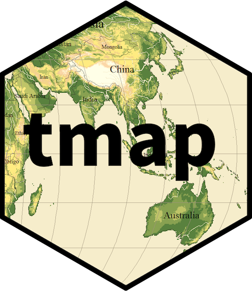
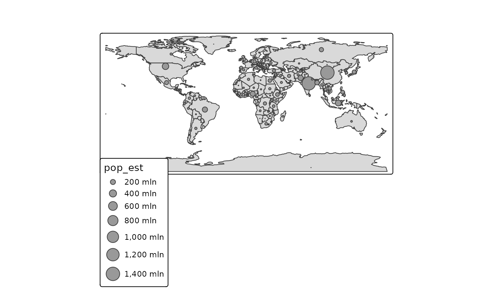
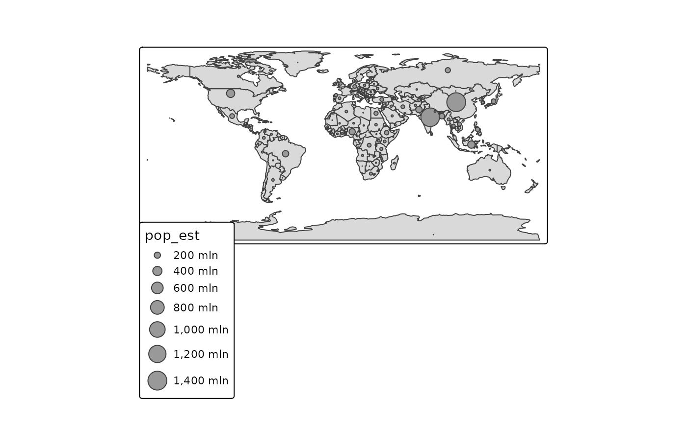
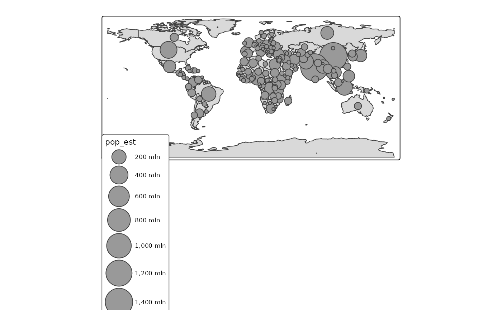
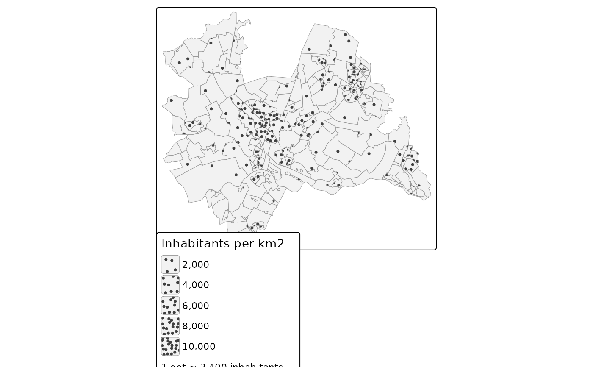

Scales: continuous scales proportional to area or volume
Source:R/tm_scale_.R
tm_scale_continuous_area.RdContinuous scales for symbols and patterns that are perceived as areas or volumes, so that the
area or volume, rather than the diameter, is proportional to the data value.
tm_scale_continuous_area() is used for symbols that are perceived as areas, such as the
size of circles and squares in tm_symbols(), and for the pattern_density of dot
patterns (see tm_patterns()), for which the number of dots per area is proportional to
the data value. tm_scale_continuous_volume() is used for symbols that are perceived as volumes,
such as spheres and cubes.
Usage
tm_scale_continuous_area(..., perceptual = FALSE)
tm_scale_continuous_volume(..., perceptual = FALSE)Arguments
- ...
arguments passed on to
tm_scale_continuous(), excepttrans(the data values are not transformed). Ifvaluesis specified, it should be the range of the visual values, e.g.c(0, 2): by defaultc(0, 1).- perceptual
should the perception of areas or volumes be compensated for? Either a logical, or a number: the perception exponent (see section 'Perceptual scaling'). By default
FALSE.
Details
A visual value grows in a number of dimensions d: a line width and a
transparency in one dimension, the area of a symbol and the number of dots per area of a dot
pattern in two dimensions, and the volume of a sphere in three dimensions. To make the
amount that grows proportional to the data, the visual value (e.g. the diameter of a symbol)
is proportional to the data value to the power 1/d. The limits start at 0, so a data value
of 0 corresponds to a visual value of 0, and twice the data value to twice the area or
volume.
| Scale | Dimensions | Power | Typical use |
tm_scale_continuous() | 1 | 1 | lwd, transparency, density of line patterns |
tm_scale_continuous_area() | 2 | 1/2 | symbol size, density of dot patterns |
tm_scale_continuous_volume() | 3 | 1/3 | symbols that look like spheres or cubes |
Note that the default scale for size (tm_scale_continuous()) already maps to the area, since
the default values of size are tm_seq(0, 1, power = "sqrt").
These scales should not be confused with tm_scale_continuous_sqrt(): that function
transforms the data values, whereas the functions documented here determine how the
(untransformed) data values are mapped to visual values. For size,
tm_scale_continuous_sqrt() takes the square root twice (once of the data, and once by
the default values of size), so that the area is not proportional to the data value.
Perceptual scaling
Areas and volumes are not perceived proportionally: larger symbols are perceived as
smaller than they are. In psychophysics, this is described by a power law: the perceived
magnitude is proportional to the actual magnitude to the power e, the perception
exponent, with e < 1. This can be compensated for by using the power 1 / (d * e)
instead of 1 / d. With perceptual = TRUE, the following perception exponents are used:
area:
e = 0.875, which gives the power 0.5716. This is the compensation that was derived by Flannery (1971) in experiments with graduated circles, and which is also available viatm_seq(power = "sqrt_perceptual").volume:
e = 0.75, which gives the power(1/3) / 0.75 = 0.444. This value is tentative: it is not established by empirical studies on map symbols. It is derived as follows. Ekman and Junge (1961) found that the perceived volumes of real objects are proportional to their volumes (eclose to 1), but that for perspective drawings of cubes and sphereseis about 0.75. They concluded that the volume of a drawing is largely judged by its area. The power 0.444 follows from this exponent in the same way as Flannery's power follows from the exponent for areas.
A number can also be specified for perceptual, which is then used as the perception
exponent e (between 0 and 1, where 1 means no compensation). Note that this is not the
power itself: e.g. perceptual = 0.8 for areas gives the power 0.5 / 0.8 = 0.625. To
specify the power directly, use tm_scale_continuous() with
values = tm_seq(0, 1, power = <power>).
References
Flannery, J. J. (1971). The relative effectiveness of some common graduated point symbols in the presentation of quantitative data. Canadian Cartographer, 8(2), 96-109.
Ekman, G., & Junge, K. (1961). Psychophysical relations in visual perception of length, area and volume. Scandinavian Journal of Psychology, 2(1), 1-10.
Examples
# the area of the bubbles is proportional to the population (as with the default scale)
tm_shape(World) +
tm_polygons() +
tm_bubbles(size = "pop_est",
size.scale = tm_scale_continuous_area())

# compensated for the underestimation of larger areas (Flannery, 1971)
tm_shape(World) +
tm_polygons() +
tm_bubbles(size = "pop_est",
size.scale = tm_scale_continuous_area(perceptual = TRUE))

# bubbles that look like spheres: the volume is proportional to the population
tm_shape(World) +
tm_polygons() +
tm_bubbles(size = "pop_est",
size.scale = tm_scale_continuous_volume(values = c(0, 2)))
#> [plot mode] fit legend/component: Some legend items or map compoments do not
#> fit well, and are therefore rescaled.
#> ℹ Set the tmap option `component.autoscale = FALSE` to disable rescaling.

# dot density: the number of dots is proportional to the population density
utrecht = NLD_dist[NLD_dist$province == "Utrecht", ]
utrecht$pop_dens = utrecht$population / utrecht$area # units: 1/km^2
tm_shape(utrecht) +
tm_polygons(fill = "grey95", col = "grey60", lwd = 0.5,
pattern = "stipple",
pattern_size = 1.2,
pattern_density = "pop_dens",
pattern_density.scale = tm_scale_continuous_area(limits = c(0, 10000)),
pattern_density.legend = tm_legend("Inhabitants per km2",
dot.value = "1 dot \u2248 {n} inhabitants"))
